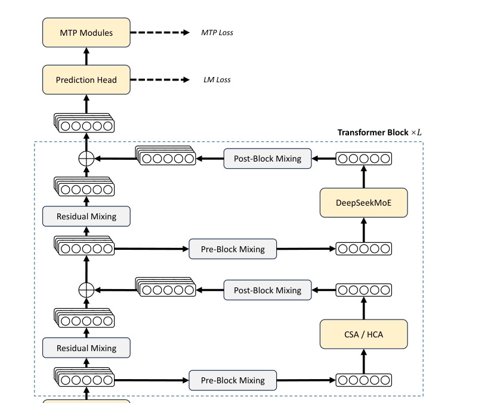

DeepSeek-V4 系列论文解读
架构概览：继承 V3 与三大升级
梳理 DeepSeek-V4 在 MoE、MTP、注意力、残差连接与优化器上的整体选择。
整体架构
DeepSeek-V4 系列保留了 Transformer 架构，并沿用了 DeepSeek-V3 中的两个关键设计：
- DeepSeekMoE：细粒度 routed expert + shared expert 的混合专家框架。
- Multi-Token Prediction（MTP）：一次预测多个未来 token 的辅助目标。
在此基础上引入三项主要升级：
- mHC：替代/增强传统残差连接。
- 混合注意力（CSA + HCA）：提升长上下文效率。
- Muon 优化器：用于大部分模块的训练。

来源：DeepSeek-V4 论文，第 2 节。
从 V3 继承的 MoE
DeepSeek-V4 的 FFN 仍采用 DeepSeekMoE 范式：
- Routed experts：细粒度专家，按 token 路由。
- Shared experts：所有 token 都会经过的共享专家。
- 负载均衡：使用无辅助损失的均衡策略，并加入轻微的序列级平衡损失，防止单条序列内出现极端不平衡。
与 V3 的一个小区别：计算专家亲和分数的激活函数从 Sigmoid 改为 Sqrt(Softplus(·))。
另外，V4 在前几个 Transformer 块中把稠密 FFN 替换为使用 Hash routing 的 MoE 层：根据输入 token ID 的预定义哈希函数决定目标专家。
来源：DeepSeek-V4 论文，第 2.1 节。
从 V3 继承的 MTP
Multi-Token Prediction（MTP）模块和训练目标与 DeepSeek-V3 保持一致，没有修改。MTP 让模型在训练时同时预测多个后续 token，被验证可以提升数据效率和模型能力。
来源：DeepSeek-V4 论文，第 2.1 节。
三大新升级
| 升级 | 解决的问题 | 核心思路 |
|---|---|---|
| mHC | 深层残差连接的数值稳定性 | 把残差映射矩阵约束到双随机矩阵流形 |
| CSA + HCA | 长上下文注意力的二次开销 | 压缩 KV Cache + 稀疏/稠密混合注意力 |
| Muon | 收敛速度与训练稳定性 | 对权重更新做正交化处理 |
DeepSeek-V4 保留了 V3 的哪两个关键设计？
DeepSeekMoE 和 Multi-Token Prediction（MTP）。
模块小结
- V4 不是推倒重来，而是在 V3 的 MoE 和 MTP 基础上做针对性升级。
- 三项升级分别解决残差稳定性、长上下文效率和训练优化问题。
- 理解这些升级的相互位置，有助于后面深入每个模块。